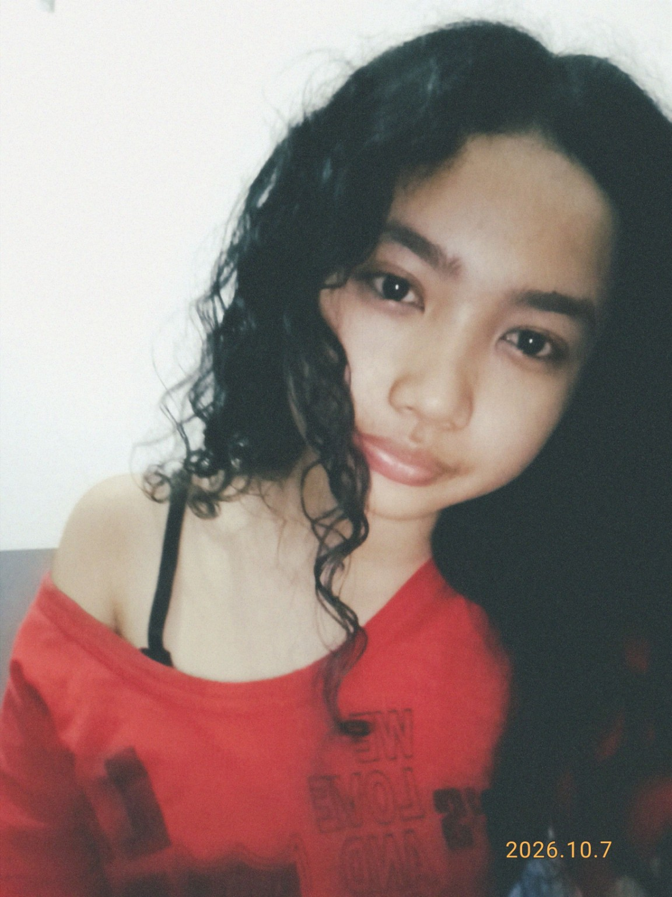
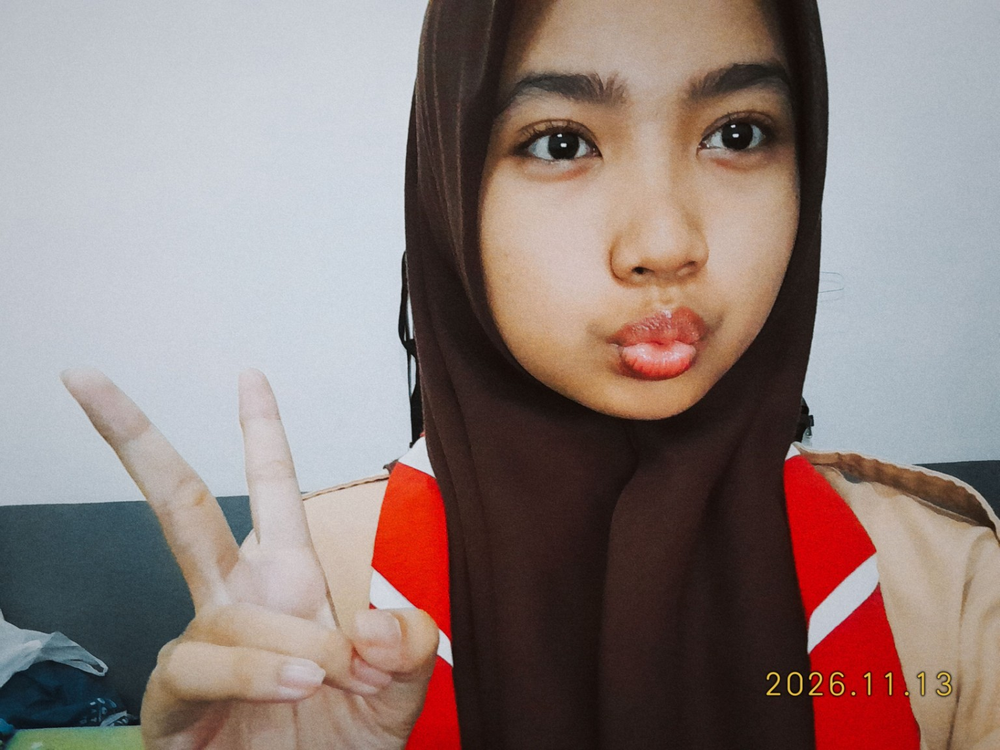
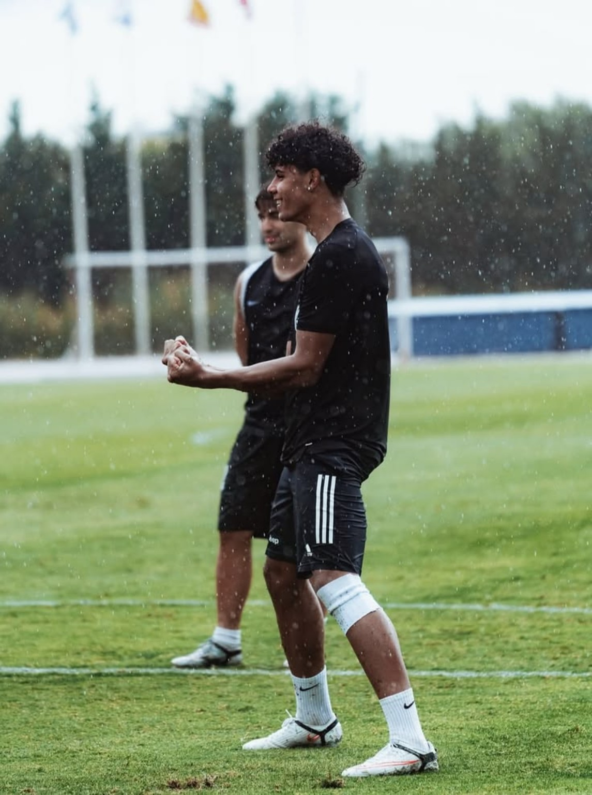

the moon · january 13
Midnight blue, deep red, quiet thoughts, a little sarcasm, and a head full of plans. The moon keeps her own orbit.
A tiny corner of the internet inspired by a January moon, a June sun, music, football days, and all the little details worth keeping. Just a fan-made scrapbook — a soft place for imagination, not a prediction of real life.
Midnight blue, deep red, quiet thoughts, a little sarcasm, and a head full of plans. The moon keeps her own orbit.
A bright point on the football field, warm afternoon light, and a reminder that every young person gets to write their own story.
Four snapshots, arranged like little prints in an old scrapbook.



Personal scrapbook layout. Share or publish photos only with permission and respect for everyone's privacy.
A soundtrack for late-night tabs, cloudy afternoons, and daydreams.